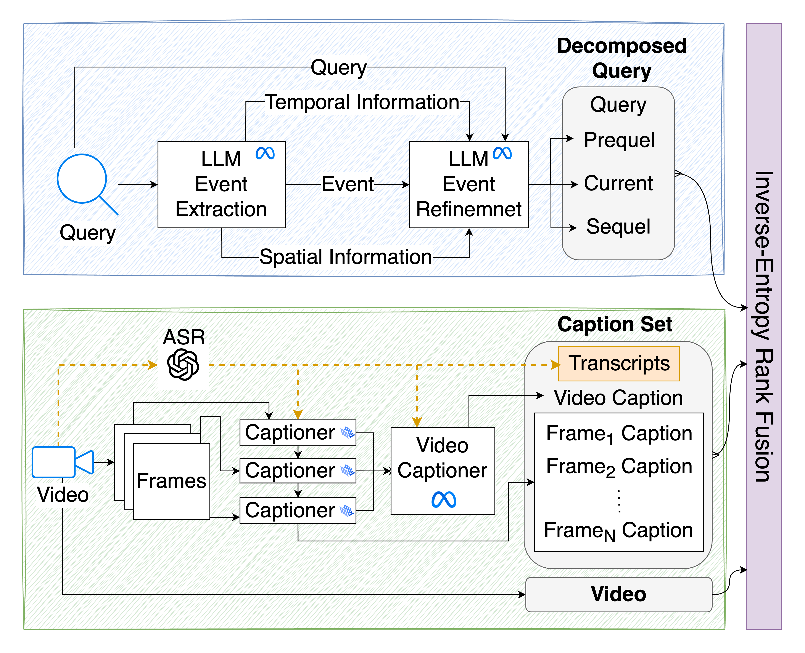
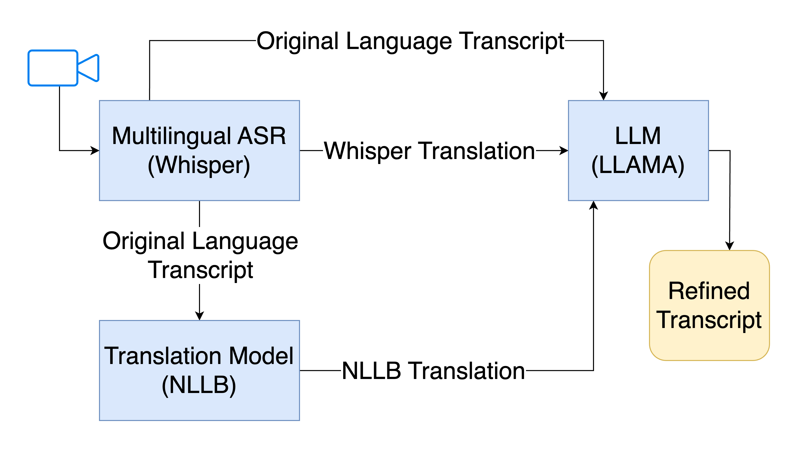

Foundation models have demonstrated remarkable capabilities in performing zero-shot tasks without the need for dataset-specific fine-tuning. However, due to differences in domain distributions, most text-to-video retrieval systems still rely on such fine-tuning. Recent advancements in large language models (LLMs) and vision-language models (VLMs) have shown impressive proficiency in understanding and applying new knowledge. In this work, we present Q2E: a drop-in text-to-video retrieval method adaptable to any dataset, domain, LLM, or VLM without requiring fine-tuning. Our approach leverages the embedded world knowledge in LLMs and VLMs to decompose queries and generate contextualized frame captions. We also adopt entropy-based fusion scoring for zero-shot fusion of multiple ranks. Through evaluations on two diverse datasets and multiple retrieval metrics, we demonstrate that Q2E outperforms several state-of-the-art baselines, highlighting the advantages of event-based decomposition in text-to-video retrieval systems. We have open-sourced the code and data for future research.


| Method | Pre@1 ↑ | Pre@5 ↑ | Pre@10 ↑ | Re@1 ↑ | Re@5 ↑ | Re@10 ↑ | MRR ↑ | NDCG ↑ | MAP ↑ | Mean Rank ↓ | Median Rank ↓ |
|---|---|---|---|---|---|---|---|---|---|---|---|
| MC | 9.48 | 43.94 | 70.69 | 86.10 | 79.92 | 65.06 | 0.90 | 74.73 | 85.15 | 23.22 | 6 |
| IV2 | 5.60 | 28.92 | 49.12 | 51.35 | 53.28 | 45.44 | 0.68 | 50.43 | 63.77 | 235.49 | 11 |
| MC + Q2E | 10.24 | 46.17 | 75.54 | 92.28 | 84.32 | 69.54 | 0.94 | 79.68 | 88.84 | 21.87 | 6 |
| MC + Q2E + ASR | 10.37 | 48.42 | 79.06 | 93.44 | 87.80 | 72.66 | 0.95 | 82.89 | 91.10 | 17.14 | 6 |
| IV2 + Q2E | 9.54 | 40.88 | 63.40 | 87.26 | 75.21 | 58.73 | 0.92 | 69.15 | 83.96 | 53.84 | 7 |
| IV2 + Q2E + ASR | 10.24 | 44.94 | 70.79 | 92.28 | 81.85 | 65.14 | 0.95 | 76.10 | 88.09 | 42.81 | 6 |
| MC | 43.92 | 67.94 | 76.88 | 44.02 | 13.63 | 7.71 | 0.54 | 59.79 | 54.38 | 19.92 | 2 |
| IV2 | 52.56 | 73.07 | 80.10 | 52.66 | 14.65 | 8.03 | 0.62 | 66.07 | 61.62 | 25.12 | 1 |
| MC + Q2E | 45.03 | 70.05 | 79.10 | 45.13 | 14.05 | 7.93 | 0.56 | 61.57 | 56.02 | 17.88 | 2 |
| MC + Q2E + ASR | 46.13 | 73.47 | 81.41 | 46.23 | 14.73 | 8.16 | 0.58 | 63.48 | 57.77 | 18.54 | 2 |
| IV2 + Q2E | 53.47 | 73.57 | 82.11 | 53.57 | 14.75 | 8.23 | 0.62 | 67.16 | 62.47 | 16.73 | 1 |
| IV2 + Q2E+ ASR | 56.28 | 76.58 | 83.72 | 56.38 | 15.36 | 8.39 | 0.65 | 69.53 | 65.06 | 15.85 | 1 |
The best score for each dataset is in bold and the best in baselines is underlined.
Will be updated after the paper is published.